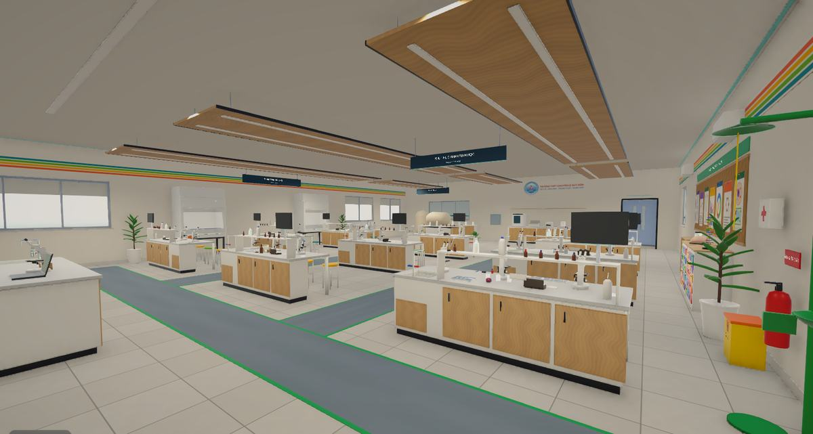
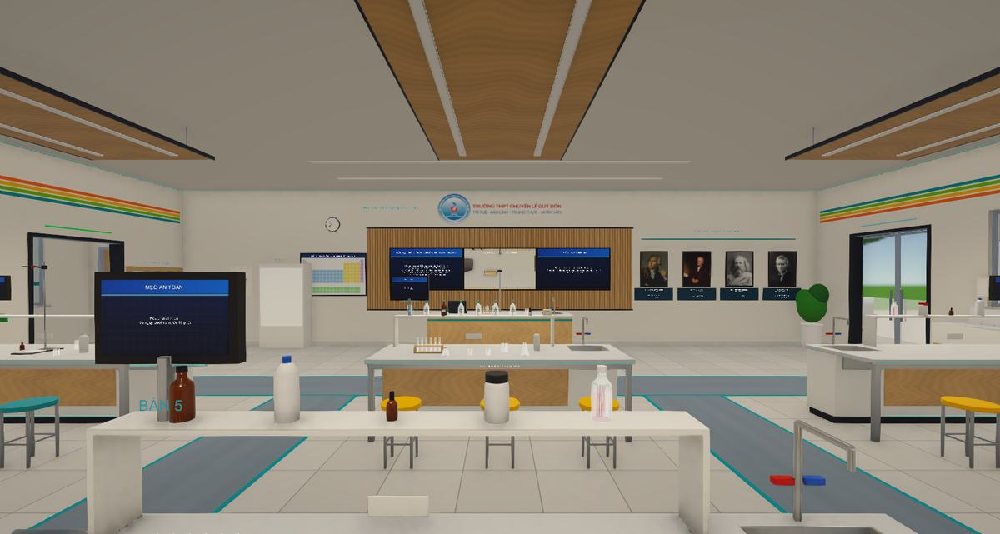
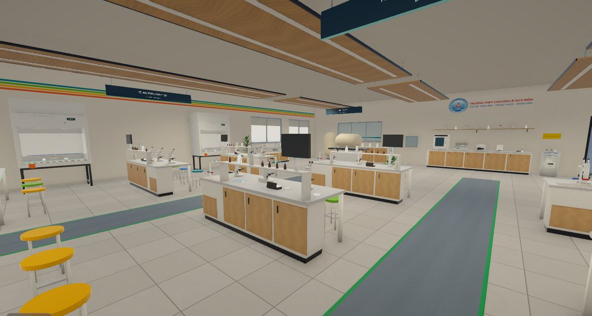
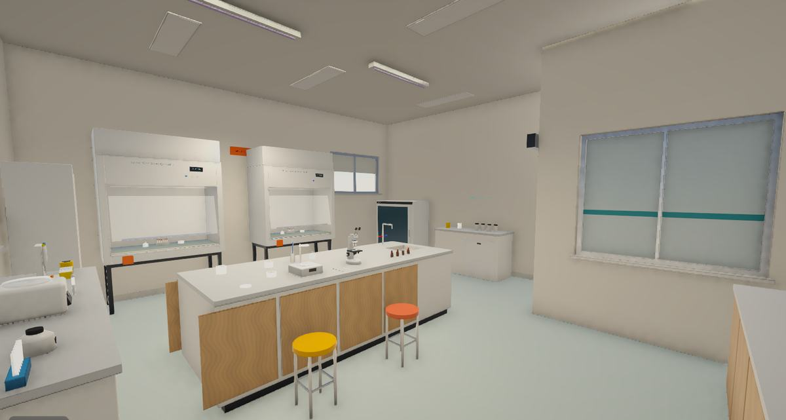
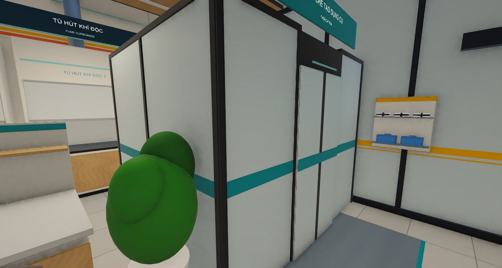
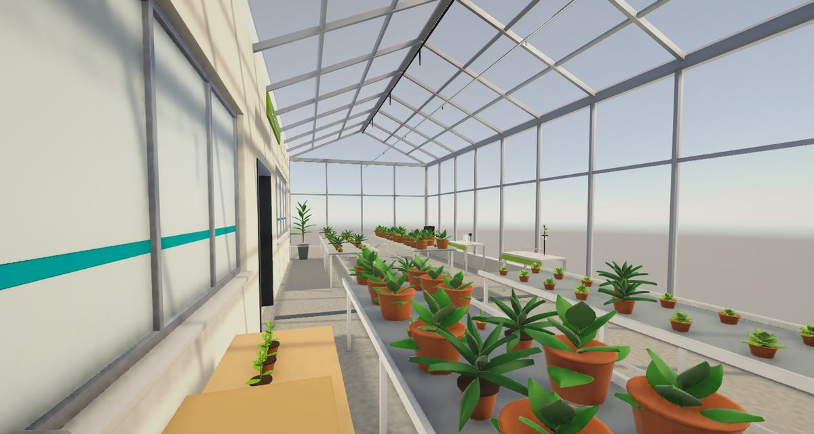
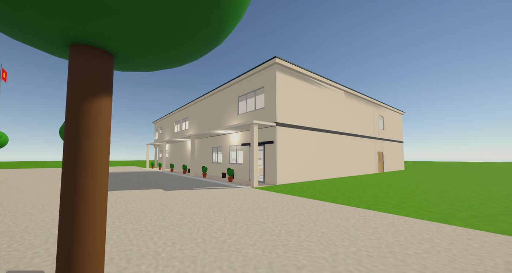

Cho học sinh
Làm thí nghiệm trước và sau giờ học, luyện tới khi thành thạo, thử cả thao tác sai để hiểu vì sao phải làm đúng.


VERA Lab là phòng thí nghiệm ảo Hóa – Sinh tích hợp AI. Tự do đi lại, tự tay làm thí nghiệm và dùng những thiết bị hiện đại mà nhiều trường chưa có.
Hóa chất có thể đắt hoặc độc, thiết bị hiện đại không phải trường nào cũng có, và trong giờ thực hành thật học sinh ít có cơ hội được làm sai. VERA Lab đưa toàn bộ không gian thí nghiệm lên máy tính để học sinh làm đi làm lại đến khi thành thạo.


Làm thí nghiệm trước và sau giờ học, luyện tới khi thành thạo, thử cả thao tác sai để hiểu vì sao phải làm đúng.
Minh họa những thí nghiệm khó tổ chức trên lớp, theo dõi kho, thiết bị và nhật ký qua trang web quản lý.
Bổ sung trải nghiệm về thiết bị và kỹ thuật chưa có điều kiện trang bị. VERA Lab đi cùng giờ thực hành thật, không thay thế.
Đi bộ trong tòa nhà hoặc dịch chuyển nhanh tới trạm cần làm.
Tìm hóa chất, lấy dụng cụ, hoặc nhờ robot mang tới bàn.
Tự tay thao tác, hỏi trợ lý AI khi chưa rõ quy trình.
Kết quả tính theo đúng việc bạn đã làm. Sai thì làm lại, không mất gì.

Nhìn bằng góc nhìn thứ nhất, đi qua cửa tự động, lên tầng bằng cầu thang hoặc thang máy. Cần nhanh thì dịch chuyển thẳng tới từng trạm.

Cầm dụng cụ, rót, pha, đun và quan sát hiện tượng. Mỗi kết quả phụ thuộc vào chính thao tác của bạn, không phải đoạn phim dựng sẵn.

Mỗi máy có màn hình vận hành riêng, chế độ Hướng dẫn và Thực hành. Học sinh làm quen với quy trình trước khi gặp máy thật.

Chọn trong khoảng 40 loại bộ phận và ghép lại trên giao diện 3D. Bộ dụng cụ xuất hiện ngay trên bàn thí nghiệm bạn chọn và chạy đúng theo cách bạn đã nối.

Hỏi cách dùng máy, nhờ robot đi lấy hóa chất hoặc làm giúp một bước. Robot chỉ làm những bước đã qua kiểm tra an toàn.

Quay đầu để nhìn quanh, ghé lại gần để phóng to, dùng cử chỉ tay để thao tác. Chuột và bàn phím vẫn dùng bình thường nếu bạn thích.

Xem kho hóa chất, thiết bị, lịch sử mượn trả và nhật ký thí nghiệm trên trình duyệt, cả ở khu Hóa và khu Sinh.
Bấm vào từng phòng trên mô hình 3D để xem nơi đó có gì. Kéo sang ngang để xoay.
Từ bàn thí nghiệm của học sinh, kho hóa chất đến phòng máy phân tích, khu chế tạo dụng cụ và khu robot.
Sáu khu chức năng, từ quan sát tế bào dưới kính hiển vi đến tách chiết ADN, nuôi cấy vi sinh và nhà kính thực vật.
Tay cầm dáng giọt nước do nhóm tự thiết kế, gọn trong lòng bàn tay, để thao tác trong lab tự nhiên hơn chuột và bàn phím.
Thân chia làm hai nửa bắt vít, nên xưởng in 3D thông thường đều làm được. Có thêm thanh móc dây đeo cổ tay và dòng chữ khắc "VERA LAB - Le Quy Don".
Mạch ESP32 truyền không dây, cảm biến chuyển động BMI160, joystick, cò bóp dùng cảm biến Hall, pin LiPo sạc qua cổng USB-C.
Đây là mô hình 3D của chính bản thiết kế dùng để in. Nhóm đang chuẩn bị linh kiện, phần mềm cho tay cầm là bước tiếp theo.
Kết quả được tính từ đúng những gì bạn đã pha và thao tác, không phát lại video. Hai bạn làm khác nhau sẽ thấy kết quả khác nhau.

Bỏ qua một bước trong quy trình thì thí nghiệm hỏng đúng như ngoài đời. Bài học nhớ lâu mà không ai gặp nguy hiểm.

Bạn tự chọn, tự nối, và bộ dụng cụ chạy đúng theo cách đã nối, kể cả khi nối sai.

Robot nhận yêu cầu bằng lời và tự lập kế hoạch từng bước, nhưng mỗi bước phải qua bộ kiểm tra trước khi thực hiện.
Webcam thường đã đủ để quay đầu nhìn quanh, thêm tay cầm tự chế thay cho kính VR đắt tiền.

Không cần card đồ họa rời. Ứng dụng chỉ tải phòng bạn đang đứng và các phòng sát cửa, nên một tòa nhà lớn vẫn nhẹ máy.
Số đo ở khu Hóa. Số đo khu Sinh sẽ được công bố sau khi đo xong.
Webcam và tay cầm là tùy chọn. Chỉ cần chuột và bàn phím là dùng được.
| Mức máy | Cấu hình | Trải nghiệm |
|---|---|---|
| Máy cũ | Card Intel UHD 620 | Khoảng 30 FPS theo ước tính, nên chọn mức đồ họa thấp |
| Tối thiểu | Core i5 thế hệ 11 hoặc Ryzen 5 5500U, card tích hợp, RAM 8 GB | Mượt ở 1080p (đã đo trên Iris Xe) |
| Khuyến nghị | GTX 1650, RTX 3050 hoặc RX 6500 XT | Trên 100 FPS theo ước tính |
Không. VERA Lab chạy trên màn hình máy tính thường, điều khiển bằng chuột và bàn phím. Webcam và tay cầm là tùy chọn.
Không. VERA Lab giúp học sinh chuẩn bị và ôn lại, còn kỹ năng cầm nắm ngoài đời vẫn cần giờ thực hành thật.
Phần trợ lý AI và robot lập kế hoạch cần kết nối tới máy chủ. Nhóm đang hướng tới AI chạy ngay trên máy.
Mô phỏng ở mức phục vụ dạy học: đúng về hiện tượng và gần đúng về số liệu trong phạm vi các bài. Nhóm chạy kiểm thử tự động để đối chiếu với đáp án.
Trong ứng dụng chỉ dùng các chủng dạy học ở cấp an toàn thấp nhất, và trợ lý AI từ chối các yêu cầu vượt mức này.

VERA Lab là dự án khoa học kỹ thuật của học sinh Trường THPT Chuyên Lê Quý Đôn, Gia Lai.
Tham quan các phòng